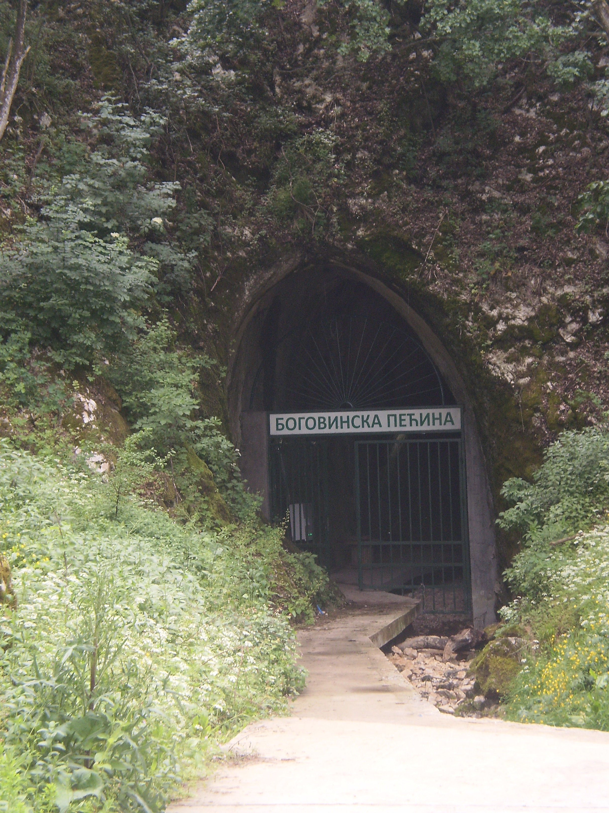
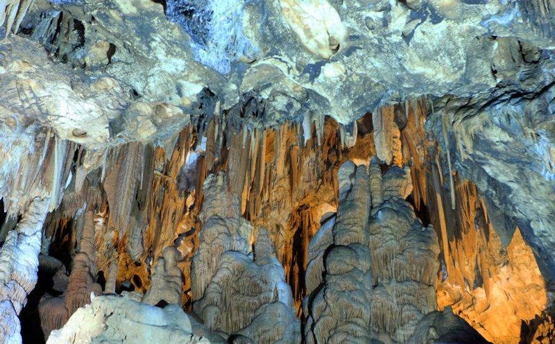

Боговинска пећина
Боговинска пећина се налази у источној Србији и једна је од најдужих пећина у том делу земље. Укупна дужина пећинских канала износи 5020 m. Дужина уређеног дела пећине износи 550 m, а површина 2201 m².
- Положај
- Досадашња истраживања
- Геолошки састав
- Спелеолошке карактеристике
- Туристички садржај
- Галерија
Положај
Боговинска пећина налази се у југоисточном подножју Кучајских планина. Удаљена је око 2 km од рудника угља „Боговина“, макадамским путем. Од Бољевца је удаљена око 14 km, а од магистралног пута Параћин-Зајечар 6 km.
Улаз у пећину налази се на територији ЈП „Србија шуме“. Инфоцентар, са водичком службом и угоститељским услугама, смештен је у ловачкој кући, на око 200 m од улаза.
До улаза у пећину изграђена је пешачка стаза. Пре двадесетак година, Боговинска пећина била је најдужа пећина у Србији - 5020 m и међу најдужим пећинама у бившој Југославији. Истовремено, то је била једина велика пећина у Србији, која није била уређена за туристичке посете.
Досадашња истраживања
Боговинска пећина била је објекат истраживања бројних спелеолошких екипа због дужине и квалитета пећинског накита.
Детаљно је истражена и објашњена њена морфогенеза, али није располагала идејним пројектом за коришћење у туризму, ни делимично, ни у целини. Главни истраживачи који су објавили своје научне резултате су: С. М. Милојевић (1938), Драгутин Петровић (1957, 1977), Д. Петровић, Душан Гавриловић, Милутин Љешевић (1978), Д. Гавриловић (1960).
У току вишегодишњег истраживања, наведени аутори, детаљно су обрадили спелеоморфологију пећине и објаснили њену генезу - начин постанка и еволуцију и учинили много за њену афирмацију у стручним круговима и јавности. Сем тога, на светлост дана донели су фотографије фасцинантног пећинског накита, који нема ни једна друга велика пећина. Од тада је прошло скоро 30 година, када је Р. Лазаревић (2007) истражио улазни потез пећине у дужини од 821 m и урадио пројекат по којем је пећина уређена за туристичке посете.
Било је и других истраживача (АСАК, 1984, 1985), али њихови резултати нису били доступни.
У вези са истраживањем Боговинске пећине, посебно изненађује чињеница да Јован Цвијић није знао за ову тада најдужу пећину. На територији општине Бољевац, истраживао је више пећина у сливу Радованске реке, затим Леденицу на Ртњу, Девојачку пећину код Подгорца и више пута је био у близини Боговинске пећине. Разлог је што га мештани нису обавестили. Чували су је за своје потребе: склониште, збегови. У то време био је познат само улаз у пећину (око 1000 m), а даље се могло само кроз водени сифон. Али у току сушних година, када вода отекне или пресахне, могло се ући у главни канал.

С. М. Милојевић (1938) указао је на значај брахиклаза(кратке пукотине које секу само један кречњачки слој), на појаву меандара у Главном каналу Боговинске пећине. Д. Петровић (1957) истражио је Боговинску пећину у дужини од 3118 m и истакао главне етапе њене морфолошке еволуције. По њему садашњи виглед (отвор на таваници) био је узлазни извор Боговинске реке, која је протицала кроз пећину. У каснијим истраживањима открио је још неке делове Боговинске пећине и на тај начин повећао дужину пећине на 3157 m (1961).
Д. Гавриловић (1960) истражио је подземну хидрографску везу, између понора подземне Боговинске реке и извора, који се јављају у галеријама рудника угља „Боговина“. Д. Петровић, Д. Гавриловић и М. Љешевић, у току 1975-1976. године. открили су нове пећинске канале, у дужини од 1503 m, тако да укупна дужина Боговинске пећине износи 5020 m. Р. Лазаревић, Бошко Пауновић и Света Илић, истражили су предвиђени део пећине, од 7- 11. фебруара 2007. године.
Поред њих, у истраживању су учествовали и рудари. Посебну помоћ пружио је рудник угља.
2020. године су објављени фосилни остаци (зуби) изумрлог плеистоценског носорога Stephanorhinus hundsheimensis (Toula, 1902) пореклом из Боговинске пећине, што је прва документована појава ове врсте на територији Србије.
Геолошки састав
Боговинска пећина претежно је изграђена у мезозојским кречњацима средње и горње јуре и доње креде.
Максимална дебљина кречњака, у зони пећине износи 170 m. Висинска разлика између улаза у пећину и тачке 50 (најдаљег истраженог дела), износи око 5 m.
Пећинска река која протиче кроз пећину, доноси ситан песак и ситан шљунак, који су пореклом од палеозојских шкриљаца, од којих је изграђен слив Боговинске реке, која понире на контакту са кречњацима, а при великим водама тече површинским коритом.
Спелеолошке карактеристике
Боговинска пећина је речна, периодично активна пећина. Изградиле су је подземне воде, које долазе из слива Боговинске реке, а пониру у кањону те реке, која у луку обухвата крашку плочу, у којој се налази сложен пећински систем. Кроз пећину протичу и воде које падају на крашку плочу, ту пониру и подземно отичу.
Улаз у пећину има облик рударског окна, ширине око 4 m и висине 5,35 m. Улаз је на висини од 268,3 m. Д. Петровић, у Боговинској пећини разликује три хоризонта пећинских канала: Високи, Главни и Понорски. Према хидрографској функцији, могу се звати: Суви, Периодски и Речни систем. Високи или Суви хоризонт је најстарији пећински систем, који се састоји од сплета канала и дворана.
Његово дно је на више места проваљено и вертикално повезано са Главним или Периодским каналом. Главни или Периодски хоризонт је најмаркантнији морфолошки елемент у Боговинској пећини. Дугачак је 2650 m. Почиње од сифонског врела на крају пећине, на висини од 276,5 m, а завршава се на улазу у пећину на коти 268,3 m. Сифонско врело ниже је од корита Боговинске реке 50 m, при хоризонталном растојању од око 100 m. Понорски или речни хоризонт је најнижи и најмлађи систем Боговинске пећине. Од дна Главног канала нижи је за десетак метара. доступан је само местимично, тамо где је дно Главног канала пробијено. Корални канал са Двораном кристала имају највише пећинског накита. Припадају Сувом хоризонту и налазе се на крају система Боговинске пећине.
Туристички садржај
При уређењу Боговинске пећине, биле су у оптицају две варијанте. Према првој из 1978. године требало је да буде изграђена једносмерна туристичка стаза, по којој би се посетиоци кретали Главним каналом, у дужини од око 350 m. Након тога, наилазили би на терасна проширења, пролазили кроз раскошни пећински накит и силазили у Главни канал, око 150 m од улаза. Тај део стазе био би двосмеран.
Ово решење је изгледало веома примамљиво, али се од њега одустало јер би веома угрожавало пећински накит. Ипак, стаза је изграђена према другој варијанти. Њена дужина прелази 1000 m, двосмерна је и прати Главни канал, при чему је обезбеђен излазак на три терасна проширења: Рударска дворана, Дворана дивова и Хајдучка дворана. На овај начин пећински накит је заштићен од евентуалног оштећења. Стаза је виша од корита Пећинске реке 0,5 m, а ширина је 1,0-1,5 m.
Галерија